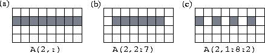
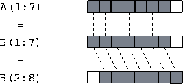
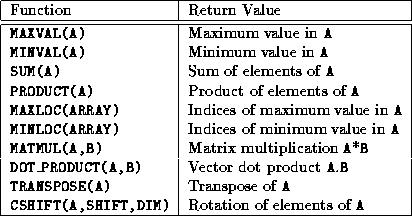
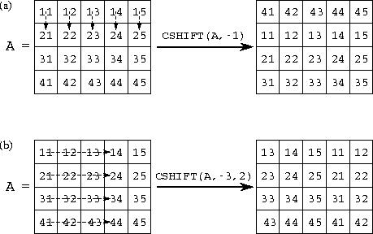

![[DBPP]](pictures//asm_color_tiny.gif)


![[Search]](pictures//search_motif.gif)
Fortran 90 (F90) is a complex language. It augments Fortran 77 (F77) with pointers, user-defined datatypes, modules, recursive subroutines, dynamic storage allocation, array operations, new intrinsic functions, and many other features. We focus here on those new features that are most relevant to parallel programming: the array assignment statement and the array intrinsic functions.
F90 allows a variety of scalar operations---operations defined on single values---to be applied also to entire arrays. This feature causes the scalar operation to be applied to each element of the array. If an operation involves several values, all must be represented by conformable arrays, that is, scalar values or arrays of the same size and shape. The operation is performed on corresponding elements from each array. For example, consider the following scalar operation, which assigns the sum b+c to a.
integer a, b, c
a = b + c
In F90, we can apply the same operation to arrays A and B and scalar c, as follows. This assigns each element A(i,j) of A the sum B(i,j)+c.
integer A(10,10), B(10,10), c
A = B + c
In fact, all F90's unary and binary intrinsic operations can be applied to arrays, as the following examples show.
real A(10,20), B(10,20)logical L(10,20)
A = A + 1.0 ! Adds 1.0 to each element of A
A = SQRT(A) ! Computes square root of each element of A
L = A .EQ. B ! Sets L(i,j) to .true. if A(i,j)= B(i,j);
! and to .false. otherwise
A conformable array section can be substituted for an entire array in an array operation. An array section is represented by specifying a range for one or more subscripts. A range is represented by a triplet that has the following general form. lower-bound : upper-bound : stride
A stride of 1 is assumed if : stride is omitted, and bounds can be omitted if the corresponding bounds of the array are required. See Figure 7.1 for examples of array sections.

Figure 7.1: F90 array sections. The three examples show array sections comprising (a) all of
row 2, (b) elements 2..7 of row 2, and (c) elements
1,3,5,7 of row 2,
respectively.
When operations are performed on arrays and array sections, corresponding
elements are selected by position, not index. Hence, different array
components do not need to have corresponding subscripts, and we can
write the following code to compute the sum A(i)=B(i)+B(i+1) for
1i 7 (Figure 7.2).
7 (Figure 7.2).
A(1:7) = B(1:7) + B(2:8)

Figure 7.2: Use of array sections to compute the sum B(i)+B(i+1)
for 1 i
i 7.
7.
Finally, a masked array assignment uses the WHERE construct to restrict the array elements on which an assignment is performed. For example, the following statement replaces each nonzero element of X with its reciprocal (the F90 /= operator is equivalent to .NE. in F77). WHERE(X /= 0) X = 1.0/X
All F90 intrinsic functions that apply to scalar values can also be applied to arrays, in which case the function is applied to each array element. For example, ABS(A) returns an array containing the absolute values of the elements of array A. In addition, F90 provides a number of transformational functions which return a scalar or array result that depends on the values of many elements of an array. Table 7.1 lists a representative selection of these functions.

Table 7.1: Selected F90 array intrinsic functions.
MAXVAL, MINVAL, SUM, and PRODUCT perform a reduction operation (Section 2.3.2) on an array, returning a scalar value representing the maximum, minimum, sum, or product of the elements of the array, respectively. Hence, the following code sets the scalar variable s to the sum of the elements of the array X.
real s, X(100)
s = SUM(X)

Figure 7.3: The F90 CSHIFT function. In (a), a negative shift of
one element is applied in dimension 1; in (b), a negative shift of
three elements is applied in dimension 2.
The CSHIFT function performs a circular shift on an array, returning a new array of the same size and shape but with its elements in a different configuration. As illustrated in Figure 7.3, a call of the form CSHIFT(A,s,d)
performs a circular shift on the elements of the array A, where the scalar or array s specifies the size and direction (left is positive) of the shift and the optional argument d indicates the dimension in which the shift is to be applied (it defaults to 1). This function is often used in expressions involving index expressions. For example, consider the following F77 loop.
real X(0:99), B(0:99)
do i = 0,99
B(i) = ( X(mod(i+99,100) + X(mod(i+1,100)) )/2
enddo
This can be written in F90 as
real X(100), B(100), L(100), R(100)
L = CSHIFT(X,+1)
R = CSHIFT(X,-1)
B = ( L + R )/2
or simply as follows.
real X(100), B(100)
B = ( CSHIFT(X,+1) + CSHIFT(X,-1) )/2
In both cases, an array assignment sets the array B to the sum
of two arrays: X shifted left one element, and X shifted
right one element.
Although powerful, F90's array operations can be used to implement only a limited class of data-parallel algorithms. Consequently, F90 programs often incorporate code that, although implicitly parallel, must be executed sequentially if a compiler is unable to detect the implicit parallelism. For example, the following code zeroes the diagonal of an array. Although clearly a parallel operation, this cannot be expressed as such using the F90 array assignment statement.
do i = 1,100
X(i,i) = 0.0
enddo
 .
. Finite Difference:
Finite Difference:
Program 7.1 illustrates F90's array assignment and array intrinsics. This program, for which both F77 and F90 versions are given, first applies a five-point finite difference stencil to the array X to obtain the array New and then computes the maximum difference between the two arrays. The F90 version uses an array assignment and the intrinsic functions ABS and MAXVAL.
© Copyright 1995 by Ian Foster